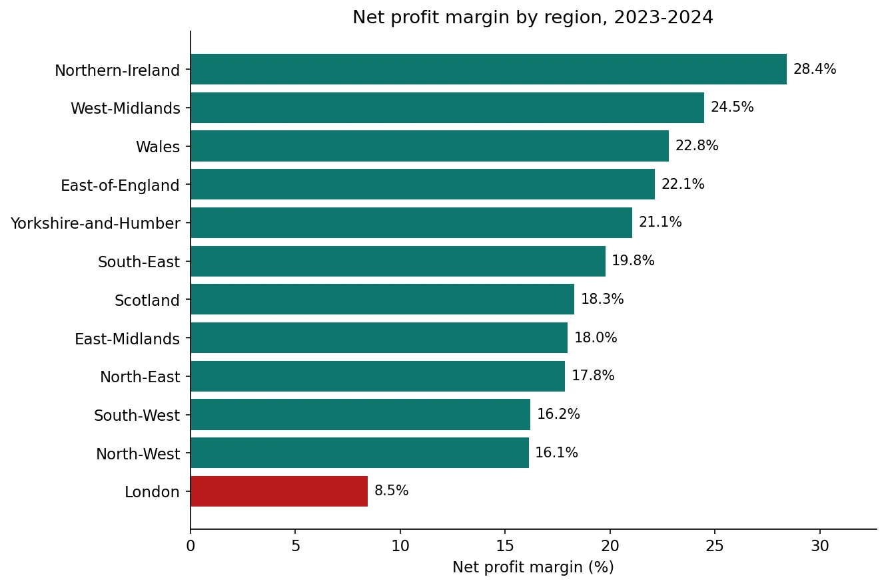
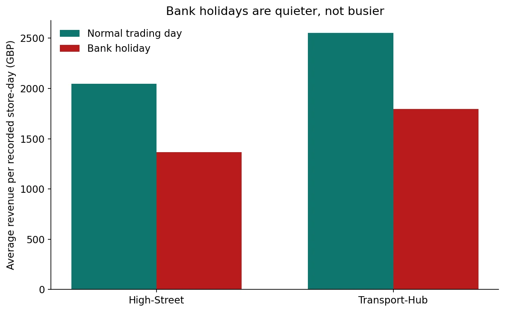

The question
This is a supplied challenge extract, not audited company accounts. It covers 2023 and 2024 trading and uses GBP throughout. I rebuilt every figure from the raw CSVs because several dashboard KPIs in the supplied workbook did not agree with each other.
The commercial team wanted to know which stores and formats actually drive profit, whether loyalty members spend more, how the revenue mix is shifting, and what seasonality does to trading.
I used five tables: 60 stores, 40 products, 730 calendar days, 10,000 recorded store-days of sales, and 1,440 store-month P&L rows.
The short answer
The estate made £16.88M net profit on £89.69M revenue over two years, an 18.8 percent margin. That average hides London at 8.5 percent margin with a quarter of its store-months loss-making. Loyalty members provide a third of revenue, but adoption has no useful relationship with transaction value. Food share did not grow. Bank holidays are quieter, not busier.
Numbers at a glance
What I found
The headline margin hides a London problem
Where does the profit actually come from?
Northern-Ireland leads on 28.4 percent net margin, then West-Midlands on 24.5 percent and Wales on 22.8 percent. London sits last on 8.5 percent despite carrying £10.46M of the two-year revenue.
25.6 percent of London store-months are classed Loss-Making or Structural-Loss, the highest share of any region. Profit per store over the two years is about £126k in London against £421k in Northern-Ireland.
What it means. Estate averages make London look like just another region. The store-level cut shows where margin is being lost.
Prioritise a London store review before adding more London sites to the 2025 plan.

Eight stores were losing money at the end of 2024
How wide is the immediate problem?
In December 2024, 8 of 60 stores were Loss-Making or Structural-Loss. East-Midlands had 3 of them. One store, Dundee Station, was Structural-Loss at minus £16,932 for that month.
South London Corner is the sharpest deterioration I found. It went from £28,649 profit in 2023 to a £79,144 loss in 2024, a fall of £107,793.
What it means. A small set of stores carries the downside. This is a triage list, not a reason to close sites without looking at the leases.
Run store-level P&L reviews on the eight loss-makers first, with South London Corner at the top.

Loyalty changes who pays, not how much they spend
Is the loyalty programme worth more investment?
Stores with higher adoption also report a higher share of revenue from loyalty members. The correlation is 0.998, which is so tight that I treat it as close to mechanical in this data rather than proof of behaviour change.
Against recomputed transaction value, adoption has a correlation of minus 0.063. In plain terms, higher loyalty adoption does not come with larger baskets here.
Members account for £29.77M of revenue, or 33.2 percent of the total. Redemption cost £1.73M, 1.9 percent of revenue. The contribution after redemption is £28.04M. That is useful context, but it is not incremental revenue because the data has no member and non-member transaction counts to compare like for like.
What it means. The programme is collecting a large share of spend, but I cannot show that it creates extra spend.
Keep the scheme running and test it properly with a holdout group before increasing the budget.

Food share did not grow
Is the revenue mix shifting towards food?
Across the recorded store-days, espresso supplies 45.7 percent of revenue, food 26.1 percent, filter 19.2 percent and retail beans 9.0 percent.
From 2023 to 2024, food moved from 26.24 percent to 25.90 percent, down 0.34 points. Retail beans moved from 8.90 percent to 9.20 percent, up 0.30 points. The mix is close to flat.
What it means. The brief's food growth idea is not supported by this extract.
Do not build a 2025 plan around a food growth story that the data does not show.

Bank holidays are quieter, not busier
Should staffing rise for holidays and weekends?
Average revenue per recorded store-day is £1,347 on bank holidays against £2,054 on standard trading days, about 34 percent lower. High-Street stores show the same pattern at £1,365 against £2,046.
Weekends are also lower in this extract at £1,661 per recorded store-day against £2,195 on weekdays. That runs against normal coffee shop intuition, so I treat it as a feature of which store-days were recorded rather than a staffing rule.
What it means. A blanket holiday staffing uplift is not supported here.
Use store-level trading history for staffing decisions, and fix the daily table coverage before drawing a weekday rule.

Profit swings are store-specific, not seasonal
Which stores moved, and does the calendar explain it?
Belfast Yard improved by £116,790 and Liverpool Collective by £116,497. At the other end, Bristol Station fell by £141,297.
The monthly pattern does not repeat cleanly. November 2023 was the worst month at £564,015 profit, while November 2024 was the best at £816,898. That is a warning against planning from month-of-year alone.
What it means. Individual store management matters more here than a single seasonal playbook.
Investigate the movers store by store before changing promotional calendars.

What I would do first
Review London store economics
High priority- Evidence
- 8.5 percent margin, 25.6 percent of store-months loss-making, and about £126k profit per store over two years.
- What to do
- Pull rent, staffing and footfall for the seven London stores and separate lease problems from trading problems.
- What I expect
- Targets the weakest margin pool before the next expansion round.
Triage the eight December loss-makers
High priority- Evidence
- 8 stores were loss-making in Dec 2024 and Dundee Station was Structural-Loss at minus £16,932.
- What to do
- Start with South London Corner and Bristol Station, then work through the rest with store managers.
- What I expect
- Stops the clearest cash drain, with a visible owner for each site.
Test loyalty incrementality before scaling it
Medium priority- Evidence
- 33.2 percent of revenue comes from members, but adoption has no link to transaction value and the data has no member transaction counts.
- What to do
- Run a holdout test in a matched set of stores and measure spend per customer, not just member revenue share.
- What I expect
- Turns a large contribution number into an actual investment decision.
Stop using format labels as an expansion rule
Medium priority- Evidence
- The data has 58 High-Street stores and 2 Transport-Hub stores. Retail-Park appears in the brief but not in the data.
- What to do
- Rank sites by regional margin and rent burden instead of format name, and fix the source labels.
- What I expect
- Avoids pretending a two-store comparison is a strategy.
Rebuild the dashboard KPI layer
Medium priority- Evidence
- The supplied workbook shows 59 profitable and 41 loss-making stores from a 60-store estate, and 27 of 28 charts have no title.
- What to do
- Use the raw-data definitions in this analysis as the single KPI source and label every chart.
- What I expect
- Gives the commercial team one set of numbers they can defend.
What this cannot tell you
The daily sales table holds 10,000 store-days out of 43,800 possible store-days. Day-of-week and holiday cuts describe recorded rows, not a full estate census.
There are no member and non-member transaction counts, so I cannot measure incremental spend. The loyalty figures are contribution, not causality.
The date dimension stops at 30 December 2024 even though the brief says 31 December 2024.
The brief describes three store formats, but the store table contains only High-Street and Transport-Hub. The format comparison is deliberately narrow.
The supplied workbook has conflicting KPI counts and mostly untitled charts. I did not use its cached values as source figures.
This is a supplied challenge extract. It is not audited company accounts.